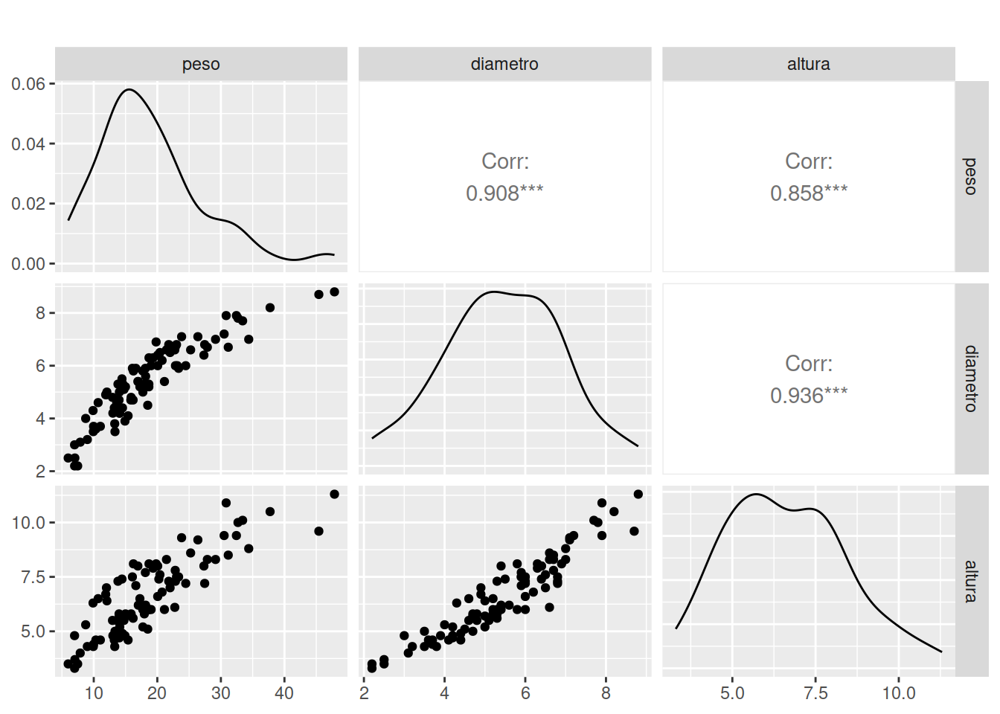

En esta etapa se realiza una exploración de la data, tipo de
variables, datos faltantes, datos atípicos. Podemos realizarlo con la
función summary() o con
library(paqueteMODELOS)
library(tidyverse)
library(modelsummary)
data("arboles1")
arboles1$D1 = as.numeric(arboles1$mg=="GENOTIPO_2")
arboles1$D2 = as.numeric(arboles1$finca=="FINCA_2")
arboles1$D3 = as.numeric(arboles1$finca=="FINCA_3")
arboles1$peso = as.numeric(arboles1$peso)
arboles1$diametro = as.numeric(arboles1$diametro)
arboles1$altura = as.numeric(arboles1$altura)
summary(arboles1) finca mg peso diametro
Length:90 Length:90 Min. : 5.98 Min. :2.200
Class :character Class :character 1st Qu.:13.64 1st Qu.:4.525
Mode :character Mode :character Median :17.48 Median :5.400
Mean :18.77 Mean :5.446
3rd Qu.:22.80 3rd Qu.:6.500
Max. :47.87 Max. :8.800
altura D1 D2 D3
Min. : 3.300 Min. :0.0 Min. :0.0000 Min. :0.0000
1st Qu.: 5.225 1st Qu.:0.0 1st Qu.:0.0000 1st Qu.:0.0000
Median : 6.450 Median :0.5 Median :0.0000 Median :0.0000
Mean : 6.634 Mean :0.5 Mean :0.3333 Mean :0.3333
3rd Qu.: 7.875 3rd Qu.:1.0 3rd Qu.:1.0000 3rd Qu.:1.0000
Max. :11.300 Max. :1.0 Max. :1.0000 Max. :1.0000 # modelsummary::datasummary_skim(arboles1)
# library(stats4) # para la función mle
# library(bbmle) # para la función mle2glimpse(arboles1)Rows: 90
Columns: 8
$ finca <chr> "FINCA_1", "FINCA_1", "FINCA_1", "FINCA_1", "FINCA_1", "FINCA…
$ mg <chr> "GENOTIPO_1", "GENOTIPO_1", "GENOTIPO_1", "GENOTIPO_1", "GENO…
$ peso <dbl> 13.73, 14.58, 15.88, 8.99, 6.99, 19.34, 21.44, 13.81, 11.88, …
$ diametro <dbl> 4.7, 5.3, 4.8, 3.2, 2.2, 6.3, 6.6, 5.3, 4.9, 5.9, 2.5, 4.7, 2…
$ altura <dbl> 5.0, 5.6, 5.8, 4.3, 3.3, 7.9, 8.3, 7.3, 6.7, 7.1, 3.7, 5.7, 3…
$ D1 <dbl> 0, 0, 0, 0, 0, 1, 1, 1, 1, 1, 0, 0, 0, 0, 0, 1, 1, 1, 1, 1, 0…
$ D2 <dbl> 0, 0, 0, 0, 0, 0, 0, 0, 0, 0, 0, 0, 0, 0, 0, 0, 0, 0, 0, 0, 0…
$ D3 <dbl> 0, 0, 0, 0, 0, 0, 0, 0, 0, 0, 0, 0, 0, 0, 0, 0, 0, 0, 0, 0, 0…library(GGally)
ggpairs(arboles1[,3:5], title=" ") 